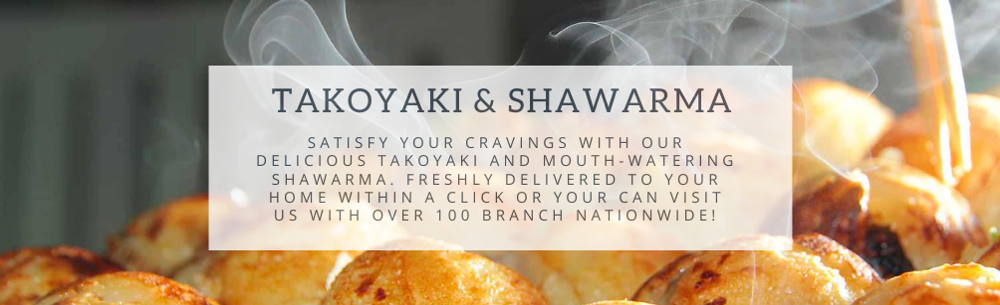

Home



Takoyaki & Shawarma is a local business located at Tandang Sora, Metro Manila. We serve freshly cooked Takoyaki and Shawarma with different varieties perfect for your Miryenda or Celebrations. We make sure to satisfy your cravings with our Takoyaki & Shawarma. Visit our Facebook page @facebook.com/Takoyaki.Shawarma Or call us #0919 956 5250 You may also visit us at Banlat Road, Tandang Sora 1116 Quezon City, Philippines